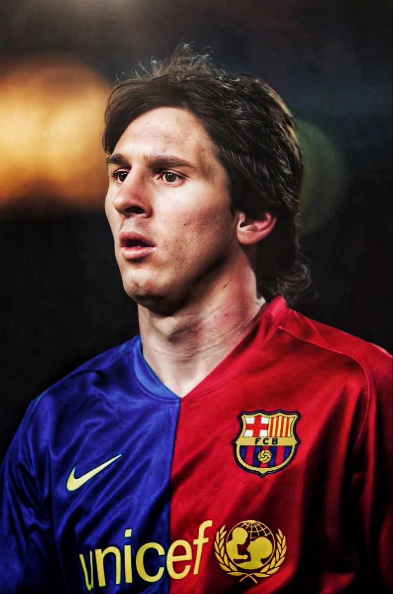

Hi i am jogot iam a huge fan of messi he is the best footballer of all time .Iam
messi fan that's why iam not saying that messi is best but bro messi is best The history say's
messi best,the people say's messi best ,the trophy say's messi best So let's know about GOAT
(Greatest Of All Time ) MESSI history
MESSI TROPHY'S:
WORLD CUP (1)
COPA AMERICA TROPHY(1)
FINALISIMA(1)
LA LIGA TROPHY (10)
COPA DE REY (7)
UCL (4)
BALLON D'OR (8)
AND MANY MORE TROPHY'S
HISTORY AND CHILHOOD OF MESSI:

Luis Lionel Andres “Leo” Messi was born on June 24, 1987, in Rosario, Argentina. As a young boy, Messi tagged
along when his two older brothers played soccer with their friends, unintimidated by the bigger boys. At the age
of 8, he was recruited to join the youth system of Newell's Old Boys, a Rosario-based club.
Recognizably smaller than most of the kids in his age group, Messi was eventually diagnosed by doctors as
suffering from a hormone deficiency that restricted his growth. Messi’s parents, Jorge and Ceclia, decided on a
regimen of nightly growth-hormone injections for their son, though it soon proved impossible to pay several
hundred dollars per month for the medication.
So, at the age of 13, when Messi was offered the chance to train at soccer powerhouse FC Barcelona’s youth
academy, La Masia, and have his medical bills covered by the team, Messi’s family picked up and moved across the
Atlantic to make a new home in Spain. Although he was often homesick in his new country, Messi moved quickly
through the junior system ranks.
Ultimately, Messi’s short stature—5 feet, 7 inches—combined with his speed and relentless attacking style, has
drawn comparisons to another famous Argentinian footballer, Diego Maradona.
Club Teams: Barcelona, PSG, and Inter miami FC Barcelona forward Lionel Messi celebrates after scoring in a
January 2006 match. He played for the club for 17 seasons.
Getty Images
At age 13, Messi signed with FC Barcelona. His first appearance for the team was when he was 16. On May 1, 2005,
Messi put himself in the record books as the youngest player to ever score a goal for the franchise.
Messi steered Barcelona to a wealth of success, most notably in 2009, when the left-footer’s team captured the
Champions League, La Liga, and Spanish Super Cup titles. That same year, after two consecutive runner-up
finishes, he took home his first FIFA World Player of the Year honor, as well as his first Ballon d’Or award,
the top European individual honor in football.
Messi became the first Argentinian player to win the Ballon d’Or. Even the great Maradona gushed about his
fellow countryman. “I see him as very similar to me,” the retired player told the BBC. “He’s a leader and is
offering lessons in beautiful football. He has something different than any other player in the world.”
Amazingly, the soccer wizard continued to improve, discovering new ways to elude defenders while leading
Barcelona to La Liga and Spanish Super Cup championships in 2010 and 2011, as well as the ’11 Champions League
title.
Messi embarked on an all-out assault on the record books in 2012. He became the first player to score five goals
in a Champions League match in early March, and a few weeks later, he surpassed Cesar Rodriguez’s club-record
232 goals to become Barcelona’s all-time leading scorer. By the end of the year, Messi had accumulated an
astounding 91 goals in club and international play, eclipsing the 85 netted in a single calendar year by Gerd
Muller in 1972. Fittingly, he broke another record when he was named the Ballon d’Or winner for the fourth
consecutive time.
In 2013, the soccer great came back to earth somewhat due to the persistence of hamstring injuries, but he
regained his record-breaking form by becoming the all-time leading scorer in La Liga and Champions League play
in late 2014.
After helping Barcelona achieve a historic second treble in 2015, he was honored with his fifth Ballon d’Or
trophy. Four years later, following another La Liga title, Messi again established a new standard for excellence
by claiming his sixth Ballon d’Or.
On August 5, 2021, FC Barcelona announced it couldn’t resign Messi due to the team’s budget constraints and La
Liga restrictions. Despite having voiced his desire to leave the club the prior season, Messi bid a teary
farewell after 17 seasons: “This is really difficult for me after so many years spent here, being here my entire
life. I’m not ready for this.”
Messi played for FC Barcelona for 17 seasons before joining Paris Saint-Germain in 2021 for two seasons. In June
2023, he announced plans to join MLS’ Inter Miami club.
MESSI INDENTITY:
FULL NAME: Luis Lionel Andres Messi
BORN: June 24, 1987
BIRTHPLACE: Rosario, Argentina
SPOUSE: Antonella Roccuzzo (2017-present)
CHILDREN: Thiago, Mateo, and Ciro
ASTROLOGICAL SIGN: Cancer
FATHER:Jorge Messi
MOTHER:Celia María Cuccittini
BROTHER'S NAME:MATIAS MESSI & RODRIGO MESSI
SISTER NAME:Maria Sol MESSI